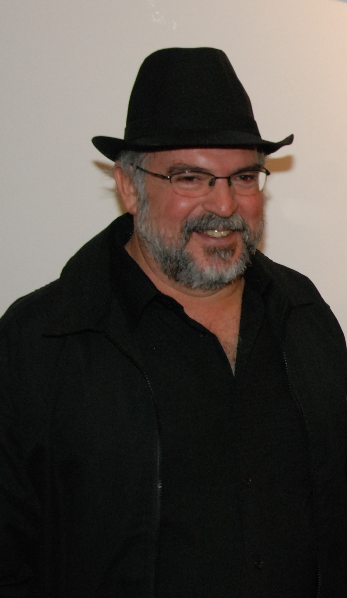

Paulo Cheida Sans realiza palestra sobre o processo criativo na PUC-Campinas

Campinas: O Museu Universitário da PUC-Campinas promove a palestra do Prof. Dr. Paulo Cheida Sans sobre o processo criativo de uma produção artística no dia 24 de setembro. O evento integra a 8ª Semana da Primavera do Instituto Brasileiro de Museus. A palestra visa abordar uma etapa da produção artística do palestrante, que envolve a gravura e a instalação no contexto da arte contemporânea, a fim de facilitar o entendimento sobre as fontes criativas que caracterizaram a criação das obras.
O mote principal da 8ª Semana da Primavera do IBRAM é que se valorize a criatividade para que o museu sempre possa se reinventar. Nesse sentido, o prof. Paulo acredita ser importante que os artistas esclareçam suas criações, sempre que possível, para que o público interessado possa compreender melhor sobre o processo criativo e suas variantes.
Paulo Cheida Sans é Doutor em Artes pela Unicamp. É professor da Faculdade de Artes Visuais e extensionista vinculado ao Museu Universitário da PUC-Campinas. Participou de cerca de 500 mostras. Recebeu 41 prêmios em Salões de Artes no Brasil e 3 no exterior (Portugal, Estados Unidos e França). Suas obras figuram em diversos acervos. É autor, entre outros, dos livros Pedagogia do Desenho Infantil e Fundamentos para o Ensino das Artes Plásticas (Alínea).
A palestra acontece no dia 24 de setembro, às 19h20, na sala 900 do Prédio H2 – Campus I – PUC-Campinas.
fonte: Portal Olho Latino
O principal acervo público do Espírito Santo mostra obras de importantes artistas brasileiros

"Democrata a Galope" - desenho de Paulo Cheida Sans.
Vitória: A Galeria de Arte Espaço Universitário (Gaeu) da Universidade Federal do Espírito Santo abre a partir do dia 24 de setembro, às 19 horas, a exposição “O meu, o seu, o nosso desejo". A curadora da exposição, Almerinda Lopes, explica que o objetivo da mostra é apresentar ao público obras que possuem um teor crítico, da repressão até a euforia da redemocratização do Brasil. "Em abril, completou-se 50 anos da implantação do regime militar no País e, tanto a Gaeu quanto a Galeria de Artes e Pesquisa (GAP) da UFES, foram criadas nessa época. A ditadura militar exercia forte controle sobre a produção artística no País”, afirma Almerinda. O título da exposição foi apropriado do álbum de xilogravuras de autoria de Antonio Henrique Amaral, que integra a mostra.
É a segunda exposição que a Galeria Espaço Universitário – GAEU disponibiliza ao público o acesso ao importante legado de objetos artísticos sob sua guarda, promovendo mais uma exposição de parte dessas obras, a partir de viés conceitual e recorte definido pela curadoria. A mostra põe em destaque obras que, ainda que não se pautem por afinidade de linguagens, faturas, temas ou processos, permitem estabelecer aproximações entre os propósitos dos objetos, considerando que, de maneira incisiva ou mais sutil, mantêm imbricados em seus códigos doses de ironia ou um sentido político/crítico.

Paulo Cheida Sans.
Participam da mostra obras dos seguintes artistas: Anna Letycia, Antonio Henrique Amaral, Arlindo Daibert, Attilio Colnago, Augusto Herkenhoff, Carlos Zílio, Carmem Có, Dante Veloni, Darel Valença Lins, Fernando Baril, Hilal Sami Hilal, Katie Van Scherdenberg, Lecko Magri, Luciano Cardoso, Nelma Pezzin, Milton Machado, Paulo Bruscky, Paulo Cheida Sans, Paulo Herkenhoff, Raul Flores, Rogério Luz, Rubem Grilo, Rubens Gerchman e Sazito. Artistas Convidados: Maruzza Valdetaro e Julio Tigre.
A exposição é aberta ao público, tem entrada gratuita e pode ser visitada até 31 de janeiro de 2015, de segunda a sexta-feira, das 08h às 18h. A Galeria de Arte Espaço Universitário / UFES está localizada na Av. Fernando Ferrari, 514, Goiabeiras – Vitória, ES.
Exposição: “O meu, o seu, o nosso desejo".
Período da mostra: 24 de setembro de 2014 a 31 de janeiro de 2015.
Abertura: 24 de setembro, às 19h.
Curadoria: Almerinda Lopes.
Expositores: Anna Letycia, Antonio Henrique Amaral, Arlindo Daibert, Attilio Colnago, Augusto Herkenhoff, Carlos Zílio, Carmem Có, Dante Veloni, Darel Valença Lins, Fernando Baril, Hilal Sami Hilal, Katie Van Scherdenberg, Lecko Magri, Luciano Cardoso, Nelma Pezzin, Milton Machado, Paulo Bruscky, Paulo Cheida Sans, Paulo Herkenhoff, Raul Flores, Rogério Luz, Rubem Grilo, Rubens Gerchman e Sazito. Artistas Convidados: Maruzza Valdetaro e Julio Tigre.
Local: - Galeria de Arte Espaço Universitário / UFES – Universidade Federal do Espírito Santo.
Horário de visitação: segunda a sexta-feira, das 08h às 18h. Entrada gratuita.
Endereço: Av. Fernando Ferrari, 514, Goiabeiras – Vitória, ES.
Informações: (27) 3335-2371.
Informações: (27) 3335-2371.
fonte: Portal Olho Latino

{kind=link}
Relembre a mostra "Voos de ontem" do artista equatoriano Fernando Torres
Relembre: Confira o vídeo da mostra "Voos de ontem", do artista equatoriano Fernando Torres, no Museu Olho Latino. As obras pertencem ao Acervo Olho Latino e ficaram em exposição de 08 a 29 de setembro de 2012, com curadoria do prof. Dr. Paulo Cheida Sans. Veja o release da época no site do Museu Olho Latino.
Relembre a mostra "Melancólicas: o mundo alienado" da artista peruana Olga Flores
Relembre: Confira o vídeo da mostra "Melancólicas: o mundo alienado", da artista plástica peruana Olga Flores, no Museu Olho Latino. A exposição ocorreu de 11 de fevereiro a 10 de março de 2012, com a curadoria do prof. Dr. Paulo Cheida Sans. Veja o release da época no site do Museu Olho Latino.
Procure o conteúdo no
Portal Olho Latino
Portal Olho Latino